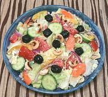

|
Mozambique Buffet SaladEast Africa, Mozambique | ||||
| Makes: Effort: Sched: DoAhead: |
3-1/4 # ** 45 min Most |
This is not an everyday salad, but one served at celebrations and other events - it's excellent for buffet and substantial enough for a lunch salad. See also Comments. | |||
|
1 7 10 8 3 6 1/3 ------- 1/4 1/4 1/2 ------- 10 10 |
# oz oz oz oz oz c --- c c t --- |
Lettuce, Iceberg (1) Tomatoes, ripe Cucumbers (2) Onions, Red Carrot Bell Pepper (3) Fresh Cheese (4) -- Dressing Wine Vinegar, wht Olive Oil ExtV Salt -- Garnish Olives, black (5) Cashews raw (6) |
MAKE - (25 min + cooling time)
|